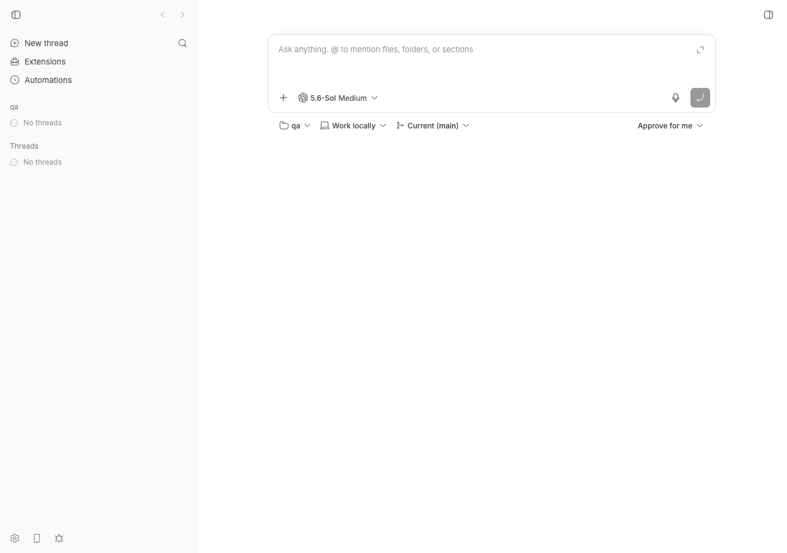
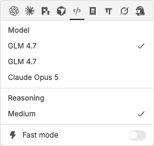
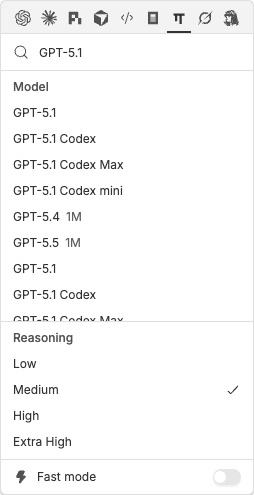
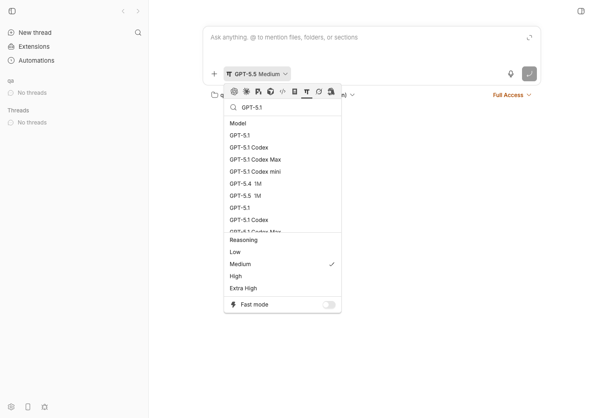
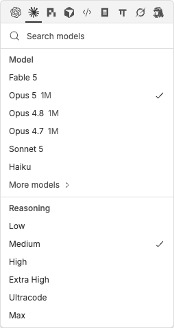
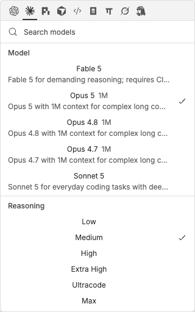
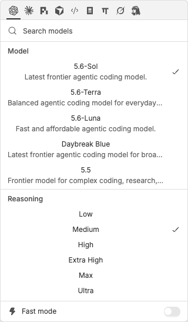
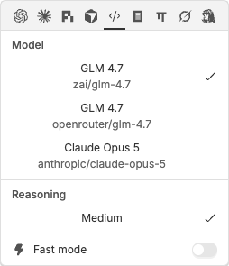

#2062 · ACP bridge drops model descriptions, so the model picker shows indistinguishable duplicate rows
Verdict: REPRODUCED (live, with a fake ACP agent and with the real omp 16.3.10 installed on this machine) · Root-cause confidence: high
Linked PR: #2063 — verdict REQUEST CHANGES: it fixes the bridge drop site correctly, but its desktop rendering change regresses the model picker for every provider (all rows become horizontally centered and Claude Code / Codex rows grow a second line of marketing text). See §8.
1. TL;DR
When an ACP agent such as omp (oh-my-pi) advertises its models through the ACP configOptions "model" select, each option carries value (for example openai-codex/gpt-5.1), a display name ("GPT-5.1") and a description (omp puts the provider/model id there). bb's ACP bridge keeps value and name but hard-codes description: "" when it builds the model catalog. The desktop model picker renders only the display name (the hover tooltip is also just the name), so two models that share a display name — omp exposes 15 such collisions today, e.g. github-copilot/gpt-5.1 and openai-codex/gpt-5.1 — appear as two identical "GPT-5.1" rows. The user cannot tell which row runs which backend. Selection itself is correct (the rows have different values); the defect is purely that the distinguishing information is discarded at the bridge and, independently, never rendered by the desktop picker. The linked PR fixes the bridge drop site but its UI change has a layout regression that makes it unmergeable as-is.
2. Claims vs findings
| Claim from the issue | Status | Evidence |
|---|---|---|
buildModelCatalogFromConfigOptions hard-codes description: "" | Verified | model-catalog.ts#L283; unit repro fails on base with expected [ '', '' ] to deeply equal [ 'zai/glm-4.7', 'openrouter/glm-4.7' ] (log). |
The sibling session-models path already maps model.description ?? "" | Verified | model-catalog.ts#L313. |
Wire schema types only value/name; description passes through untyped | Verified | wire.ts#L233-L238 (.passthrough()). The repro test parses through this schema and the value survives to the catalog builder — the builder simply ignores it. |
omp sends { value: "provider/modelId", name, description: "provider/modelId" } | Verified (live) | Real omp acp 16.3.10 probed over stdio: 72 model options, every one with description equal to its value (probe log). |
| omp advertises duplicate display names in practice (example: "GLM 4.7") | Verified (different names here) | On this machine omp exposes 15 colliding display names (GPT-5, GPT-5.1, GPT-5.1 Codex, GPT-5.2, GPT-5.4, GPT-5.5, GPT-4o ×5, …) from github-copilot/ vs openai-codex/. No GLM collision here because no zai/openrouter keys are configured; the mechanism is identical. |
| Desktop picker shows two rows with identical labels and no secondary text | Verified (screenshots) | fake agent and real omp. The DOM rows' title tooltips are also identical ("GPT-5.1" / "GPT-5.1"). |
Desktop mapping drops the field (useThreadCreationOptions.ts) | Verified | L604-L614; also the preview-provider mapping in ModelReasoningPicker.tsx#L383-L396. Additionally the row component MenuRowButton has no description slot at all (L1390-L1460), so mapping alone would not have rendered it. |
"Desktop render slot already exists: PickerOption.description" | Misleading | The type field exists (OptionPicker.tsx#L35) and OptionPicker renders it, but the model picker does not use OptionPicker rows; it uses its own MenuRowButton, which ignores the field. A render change is required, not just a mapping change. |
| Mobile already maps and renders it | Verified | execution-options.ts#L111-L119, mobile ModelReasoningPicker.tsx#L234. Note: this means mobile already shows Claude Code / Codex descriptions as subtitles today. |
CLI unaffected (bb provider models prints raw ids) | Verified | bb provider models acp-omp lists github-copilot/gpt-5.1 and openai-codex/gpt-5.1 on separate lines with the id column. |
| Not reproduced on a shipped release (reporter's honesty note) | Now reproduced | Reproduced on base fcada5a3b (73 commits after the reporter's 00561091); the code path is unchanged between the two. |
| Not a duplicate of #1093 / #1836 | Verified | #1093 is about OpenCode custom models being absent; #1836 is about plugin reuse of the picker. Neither concerns dropped descriptions. |
{kind=link}
{kind=link}
3. Environment
- bb source at
fcada5a3b88302acb9944aa74b11db4ecaa215a0(main, 2026-08-21); origin/main at investigation time wasb2e80352b, 3 commits later, none touching the relevant files — the bug is still present on main. - macOS 26.5.2 (arm64), Node v22.23.1, pnpm 9.15.0.
- ACP agents: a 90-line fake agent (fake-omp-acp.mjs) registered as
acp-fake-omp, and the realomp16.3.10 on PATH (auto-detected asacp-omp/ "oh-my-pi"). - Own dev instance via
scripts/bb-dev-app current: Apphttp://localhost:17877, Serverhttp://localhost:25877, Host daemon127.0.0.1:33877, data dir~/.bb-dev/bb-machines-bee.getbb.app-checkouts-bb-.claude-worktrees-wf_21e66a79-f02-19-9c8e795d1066(deleted at cleanup). Browser: headless Chrome via doobie, 1280×900. - No LLM turns were run; ACP model discovery only does
initialize/session/new/session/set_config_optionagainst the local agent.
4. Minimal reproduction
4a. Unit level (fastest, no running app)
- Save model-catalog.repro-2062.test.ts as
plugins/provider-acp/src/bridge/model-catalog.repro-2062.test.ts. - Run it from the plugin directory:
cd plugins/provider-acp && pnpm exec vitest run src/bridge/model-catalog.repro-2062.test.ts
- Expected: both tests pass. Actual on
fcada5a3b:FAIL src/bridge/model-catalog.repro-2062.test.ts > #2062 ACP config-option model descriptions > keeps the description the agent sent for each select option AssertionError: expected [ '', '' ] to deeply equal [ 'zai/glm-4.7', 'openrouter/glm-4.7' ] - Expected + Received [ - "zai/glm-4.7", - "openrouter/glm-4.7", + "", + "", ] ❯ src/bridge/model-catalog.repro-2062.test.ts:44:46 Test Files 1 failed (1) Tests 1 failed | 1 passed (2)The second test (leaves two rows that differ only by id) passes and documents the consequence: both catalog entries havedisplayName === "GLM 4.7"and differ only inid.
// plugins/provider-acp/src/bridge/model-catalog.repro-2062.test.ts
import { describe, expect, it } from "vitest";
import { acpSessionNewResultSchema } from "../wire.js";
import {
buildModelCatalogFromConfigOptions,
findAcpModelConfigOption,
} from "./model-catalog.js";
// Exactly what an omp-style agent returns from session/new: two providers
// expose the same display name; value and description differ.
const sessionNew = acpSessionNewResultSchema.parse({
sessionId: "s1",
configOptions: [
{
id: "model",
name: "Model",
category: "model",
type: "select",
currentValue: "zai/glm-4.7",
options: [
{ value: "zai/glm-4.7", name: "GLM 4.7", description: "zai/glm-4.7" },
{
value: "openrouter/glm-4.7",
name: "GLM 4.7",
description: "openrouter/glm-4.7",
},
],
},
],
});
describe("#2062 ACP config-option model descriptions", () => {
const models = buildModelCatalogFromConfigOptions(
findAcpModelConfigOption(sessionNew.configOptions),
);
it("keeps the description the agent sent for each select option", () => {
expect(models.map((m) => m.description)).toEqual([
"zai/glm-4.7",
"openrouter/glm-4.7",
]);
});
it("leaves two rows that differ only by id when descriptions are dropped", () => {
const [a, b] = models;
expect(a.displayName).toBe(b.displayName);
expect(a.id).not.toBe(b.id);
});
});
4b. Live desktop picker with a fake ACP agent (no omp needed)
- Save fake-omp-acp.mjs somewhere, e.g.
/tmp/fake-omp-acp.mjs. It is a stdio JSON-RPC agent whosesession/newresult contains amodelselect with optionszai/glm-4.7("GLM 4.7"),openrouter/glm-4.7("GLM 4.7") andanthropic/claude-opus-5, each withdescription= its value. - Register it in the instance's
config.json(for a dev instance:<data dir>/config.json; for a real install~/.bb/config.json) before starting bb:{ "customAcpAgents": [ { "id": "fake-omp", "displayName": "Fake OMP", "command": "node", "args": ["/tmp/fake-omp-acp.mjs"] } ] } - Start bb (
scripts/bb-dev-app current), create a project, open the composer and click the provider/model button, then click the "Fake OMP" provider tab. - What the server hands the app — every description is empty:
$ curl -s "$BB_SERVER_URL/api/v1/system/execution-options?providerId=acp-fake-omp" | jq '.models[] | {id, displayName, description}' { "id": "zai/glm-4.7", "displayName": "GLM 4.7", "description": "" } { "id": "openrouter/glm-4.7", "displayName": "GLM 4.7", "description": "" } { "id": "anthropic/claude-opus-5", "displayName": "Claude Opus 5", "description": "" }(full response: execution-options-acp-fake-omp.json) - Expected: the two GLM rows are distinguishable. Actual: two identical rows; even the DOM
titletooltip is "GLM 4.7" on both (accessibility tree:button "GLM 4.7",button "GLM 4.7").


zai/ from openrouter/.4c. Live with the real omp (oh-my-pi) agent
- With
ompon PATH bb auto-registersacp-omp.bb provider models acp-omplists 72 models; the id column disambiguates them (log):github-copilot/gpt-5.1 GPT-5.1 github-copilot/gpt-5.1-codex GPT-5.1 Codex … openai-codex/gpt-5.1 GPT-5.1 openai-codex/gpt-5.1-codex GPT-5.1 Codex
- In the picker choose the "oh-my-pi" tab and type
GPT-5.1in the search box. Actual: "GPT-5.1", "GPT-5.1 Codex", "GPT-5.1 Codex Max" and "GPT-5.1 Codex mini" each appear twice with identical text and tooltips. The execution-options response has 72 models, 0 non-empty descriptions and 15 duplicated display names (json).


Repro files: 2062/repro/ (agent script, config, doobie scripts, API responses, logs).
5. Root cause
There are two independent drop sites; fixing either alone does not make the rows distinguishable.
5a. Bridge: the config-options catalog path discards description
The ACP bridge prefers the configOptions "model" select over the legacy models field when both are present (bridge.ts#L898-L925), and omp advertises only configOptions. The option schema passes unknown keys through, so description reaches the builder, which then writes a literal empty string:
// plugins/provider-acp/src/bridge/model-catalog.ts#L276-L287 (base)
return {
id: option.value,
model: option.value,
displayName: option.name ?? option.value,
description: "", // <-- drop site; option.description is ignored
supportedReasoningEfforts: reasoning.supportedReasoningEfforts,
defaultReasoningEffort: reasoning.defaultReasoningEffort,
isDefault,
};
The sibling buildModelCatalogFromSessionModels a few lines down already does description: model.description ?? "" (L296-L325). The literal dates from the ACP-native discovery work in #321 and moved unchanged into the plugin in #1640. AvailableModel.description is a required z.string() (provider-types.ts#L16-L27), so the server passes the empty string through unchanged to /api/v1/system/execution-options.
5b. Desktop: the model picker has no disambiguation for equal labels
The app maps AvailableModel to { value, label, routeProviderId? } (useThreadCreationOptions.ts#L604-L614, and the provider-preview path at ModelReasoningPicker.tsx#L383-L396). The row component renders label plus the optional qualifier (used today only for Pi's routeProviderId) and sets the tooltip to the same text (L1436-L1447). Nothing in the chain looks at description or at value for display, so two options with equal displayName are visually identical. The search filter does match on value (L143-L152), so typing openai-codex narrows the list — but the user has no way to learn that those ids exist from the UI.
Deeper issue. The picker assumes displayName is unique per provider. That is not guaranteed by the AvailableModel contract and is already false for omp (15 collisions on this machine, all from the agent aggregating several upstream providers). Any future provider that aggregates backends will hit the same wall, independent of the ACP description field.
6. Proposed fix (first principles)
- Bridge (required, two lines): type
description: acpOptionalStringonacpConfigOptionSelectOptionSchemaand mapdescription: option.description ?? ""inbuildModelCatalogFromConfigOptions, mirroring the session-models path. NoHOST_DAEMON_PROTOCOL_VERSIONbump: the field is already required in the wire contract; only its value changes. PR #2063 does exactly this part correctly. - Desktop (required, but narrower than #2063): do not unconditionally render
descriptionas a second line — Claude Code and Codex already ship non-empty marketing descriptions ("Opus 5 with 1M context for complex long coding sessions", "Latest frontier agentic coding model."), so that turns a one-line dense menu into a two-line menu for every user. Instead, in themodelOptions/moreModelOptions/ preview mappings, detect label collisions and only for colliding rows set the existingqualifierslot (the one Pi'srouteProviderIdalready uses) to a short disambiguator: the agent'sdescriptionwhen it is short and differs from the label, else the rawvalue. This reuses the existing inline "label qualifier" rendering and the existingtitle="label · qualifier"tooltip, keeps row height, and fixes every provider, not only ACP.
What could go wrong: long descriptions (Gemini-style sentences) in the qualifier would truncate; cap or prefervaluewhen the description exceeds ~40 characters. If the team wants full descriptions as subtitles (matching mobile), that is a product decision and should land with left-aligned text and a compact-density check, not as a side effect of this bug. - Test: the unit test above for the bridge, plus a picker test asserting that two options with equal labels render different accessible names / tooltips and that clicking the second one emits its own
value.
7. PR review — #2063 Preserve ACP model descriptions in the catalog and pickers
What it changes (8 files, +140/−12; diff): types description on the select-option wire schema; maps it in buildModelCatalogFromConfigOptions; threads description into desktop ModelPickerOptions in three mapping sites; wraps MenuRowButton's label in a new flex-1 flex-col container and renders description as a second line; adds tests in the plugin, app and mobile.
Does it address the root cause? Yes for 5a (bridge). For 5b it chooses "always show description" rather than "disambiguate"; that is a defensible product choice in isolation, but the implementation regresses unrelated surfaces.
How I tested. Merged pr-2063 onto base fcada5a3b (clean merge; the PR is based on 00561091, 73 commits behind). Ran pnpm exec turbo run typecheck for bb-plugin-provider-acp, @bb/app, @bb/mobile (pass, log); vitest for the plugin's model-catalog/wire tests plus my repro (36/36 pass, log); the app's picker and hooks tests (377/377 pass, log). Rebuilt, restarted my dev instance on the merged branch and screenshotted the picker for Fake OMP, Claude Code and Codex.
[HIGH] Layout regression for every provider: all picker rows become horizontally centered. apps/app/src/components/pickers/ModelReasoningPicker.tsx (PR hunk at the old L1432-L1447, new <span className="flex min-w-0 flex-1 flex-col gap-0.5">). Before, the label span was a content-sized flex child pinned left by justify-between. The PR makes the wrapper flex-1 so it fills the row, and its children are block-level (truncate) and inherit the <button> user-agent default text-align: center. Result: every model row and every reasoning row ("Low", "Medium", …) is centered. Measured in the running app on the PR build: buttonTextAlign: "center", labelTextAlign: "center", wrapperWidth: 266. jsdom tests cannot see this. Fix: add text-left (or items-start + self-start) on the wrapper.


[HIGH] Unannounced visual change for Claude Code and Codex (and Pi / any provider with descriptions). apps/app/src/hooks/useThreadCreationOptions.ts L599-L600 / L620-L621 (PR) forward description for all providers. Claude Code models ship descriptions from model-catalog-data.ts and Codex from models.ts#L120, so with the PR every default-provider row doubles in height ("5.6-Sol / Latest frontier agentic coding model.", "Opus 5 1M / Opus 5 with 1M context for complex long coding sessions"). The PR description says only that "non-empty descriptions flow into picker options"; it does not say this rewrites the default picker for every user, and no screenshot or storybook update accompanies it. Mobile already behaves this way, so parity is an argument for it, but it is a product decision that should be made explicitly. The server also tags custom models with "Custom model from config.json" (execution-options.ts#L394), which would now render under every custom model row.


[MEDIUM] The approach treats the symptom for one agent rather than the general problem. Rows are distinguishable only when the agent happens to put a distinguishing string in description. An agent that sends description: null (pi-acp does, per the comment at wire.ts#L222-L231) or a prose description identical for both variants would still produce identical rows. The existing qualifier slot, driven by a label-collision check, handles all cases and is the smaller change (see §6).
[LOW] Stale base. Branch is on 00561091, 73 commits behind; it merges cleanly onto fcada5a3b and typechecks/tests pass there, so this is cosmetic — rebase before merge.
[LOW] Tooltip not updated. The title attribute stays label · qualifier; with the second line present the hover tooltip no longer matches the row content. Minor.
Things I checked and found fine: no as/unknown smuggling; acpOptionalString correctly normalises null; no HOST_DAEMON_PROTOCOL_VERSION bump needed (required field, value-only change) — the PR states this correctly; no server/daemon boundary violation (the bridge is the right layer for provider translation); ModelPickerOption only flows into ModelReasoningPicker, so OptionPicker's own description rendering is not accidentally activated; the plugin, app and mobile tests added by the PR are real regression tests (the plugin one fails on base).
Verdict: REQUEST CHANGES. Keep the wire.ts / model-catalog.ts hunks and their tests as-is. For the desktop half either (a) restrict the secondary text to rows whose label collides and use the existing qualifier slot, or (b) if the maintainers explicitly want mobile parity (descriptions everywhere), fix the centering (text-left), re-verify Claude Code / Codex density with screenshots, and call the behaviour change out in the PR description.
8. Related issues
- #1342 first class oh-my-pi integration — the provider whose aggregated catalog exposes the collisions.
- #1093 Make OpenCode custom models and agents clear and selectable — adjacent (ACP model catalog clarity) but a different cause, as the reporter says.
- #1836 Plugin apps cannot reuse bb's provider/model picker — unrelated cause, same component.
- #321 / #1640 — where the
description: ""literal was introduced and then moved into the plugin. - #2122 provider-acp drops agent-initiated turns (OMP) — another omp-specific bridge gap, unrelated mechanism.
9. Appendix
Raw omp probe (session/new over stdio, first 3 options and collisions)
$ node probe-omp-acp.mjs omp acp
config option ids: mode, model, thinking
model select options: 72
first 3 options raw:
[
{ "value": "github-copilot/claude-fable-5", "name": "Claude Fable 5", "description": "github-copilot/claude-fable-5" },
{ "value": "github-copilot/claude-haiku-4.5", "name": "Claude Haiku 4.5", "description": "github-copilot/claude-haiku-4.5" },
{ "value": "github-copilot/claude-opus-4.5", "name": "Claude Opus 4.5", "description": "github-copilot/claude-opus-4.5" }
]
display names shared by >1 option: 15
"GPT-4.1" -> github-copilot/gpt-4.1 | github-copilot/gpt-4.1-2025-04-14
"GPT-4o" -> github-copilot/gpt-4o | github-copilot/gpt-4-o-preview | github-copilot/gpt-4o-2024-05-13 | github-copilot/gpt-4o-2024-08-06 | github-copilot/gpt-4o-2024-11-20
"GPT-5" -> github-copilot/gpt-5 | openai-codex/gpt-5
"GPT-5.1" -> github-copilot/gpt-5.1 | openai-codex/gpt-5.1
"GPT-5.1 Codex" -> github-copilot/gpt-5.1-codex | openai-codex/gpt-5.1-codex
Execution-options analysis for the real omp provider (base)
models: 72 selectedOnly: 0 nonEmptyDescriptions: 0 duplicate display names: 15 "GPT-4.1" -> github-copilot/gpt-4.1 | github-copilot/gpt-4.1-2025-04-14 "GPT-4o" -> github-copilot/gpt-4o | github-copilot/gpt-4-o-preview | github-copilot/gpt-4o-2024-05-13 | github-copilot/gpt-4o-2024-08-06 | github-copilot/gpt-4o-2024-11-20 "GPT-5" -> github-copilot/gpt-5 | openai-codex/gpt-5 "GPT-5.1" -> github-copilot/gpt-5.1 | openai-codex/gpt-5.1 "GPT-5.1 Codex" -> github-copilot/gpt-5.1-codex | openai-codex/gpt-5.1-codex "GPT-5.1 Codex Max" -> github-copilot/gpt-5.1-codex-max | openai-codex/gpt-5.1-codex-max "GPT-5.1 Codex mini" -> github-copilot/gpt-5.1-codex-mini | openai-codex/gpt-5.1-codex-mini "GPT-5.2" -> github-copilot/gpt-5.2 | openai-codex/gpt-5.2 "GPT-5.2 Codex" -> github-copilot/gpt-5.2-codex | openai-codex/gpt-5.2-codex "GPT-5.4" -> github-copilot/gpt-5.4 | openai-codex/gpt-5.4 "GPT-5.4 nano" -> github-copilot/gpt-5.4-nano | openai-codex/gpt-5.4-nano "GPT-5.5" -> github-copilot/gpt-5.5 | openai-codex/gpt-5.5 "GPT 3.5 Turbo" -> github-copilot/gpt-3.5-turbo | github-copilot/gpt-3.5-turbo-0613 "GPT 4" -> github-copilot/gpt-4 | github-copilot/gpt-4-0613 "GPT-4o mini" -> github-copilot/gpt-4o-mini | github-copilot/gpt-4o-mini-2024-07-18
Picker DOM rows, PR build (textContent of each row button)
Fake OMP : "GLM 4.7zai/glm-4.7", "GLM 4.7openrouter/glm-4.7", "Claude Opus 5anthropic/claude-opus-5"
Claude : "Fable 5Fable 5 for demanding reasoning; requires Claude Code v2.1.170+",
"Opus 51MOpus 5 with 1M context for complex long coding sessions", …
Codex : "5.6-SolLatest frontier agentic coding model.",
"5.6-TerraBalanced agentic coding model for everyday work.", …
computed : buttonTextAlign "center", labelTextAlign "center", wrapper "flex min-w-0 flex-1 flex-col gap-0.5" width 266px
Commands run (abridged)
git checkout fcada5a3b && pnpm install --frozen-lockfile --prefer-offline && pnpm exec turbo run build cd plugins/provider-acp && pnpm exec vitest run src/bridge/model-catalog.repro-2062.test.ts # fails on base cp 2062/repro/config.json "$DATA_DIR/config.json" && scripts/bb-dev-app current pnpm bb:dev provider list ; pnpm bb:dev provider models acp-fake-omp ; pnpm bb:dev provider models acp-omp curl -s "$BB_SERVER_URL/api/v1/system/execution-options?providerId=acp-fake-omp" node 2062/repro/probe-omp-acp.mjs omp acp doobie --headless run 2062/repro/doobie-*.js # screenshots git fetch origin pull/2063/head:pr-2063 && git switch -c pr-2063-on-base fcada5a3b && git merge pr-2063 pnpm exec turbo run typecheck --filter=bb-plugin-provider-acp --filter=@bb/app --filter=@bb/mobile cd apps/app && pnpm exec vitest run src/components/pickers/ModelReasoningPicker.test.tsx src/hooks pnpm dev:stop && pnpm exec turbo run build && scripts/bb-dev-app current # PR build screenshots pnpm dev:stop ; rm -rf "$DATA_DIR" /tmp/bb-2062-scratch ; ss -ltn | grep -E "17877|25877|33877" # cleanup, ports free
Other artifacts: execution-options on the PR build (descriptions populated), PR diff, doobie scripts used for every screenshot.